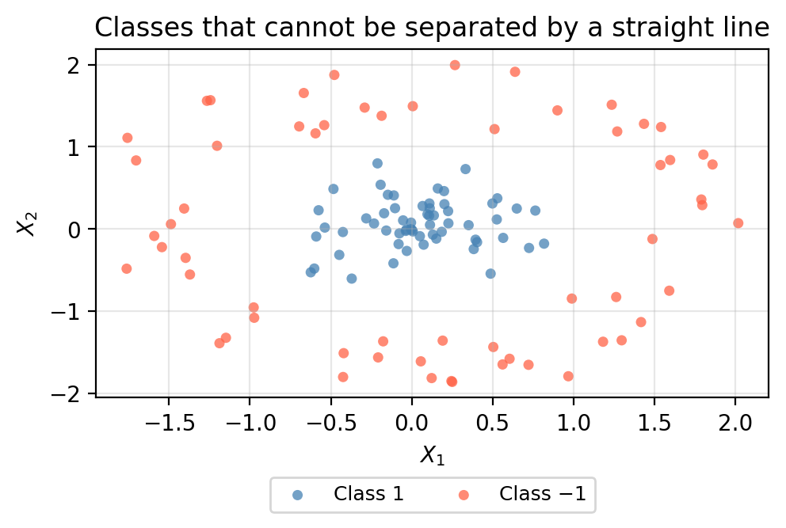
Support vector machines
In this lesson we introduce:
- Feature-space augmentation as a strategy for non-linear classification
- The kernel trick as a computationally efficient way to enlarge the feature space
- The polynomial and radial kernels and the tuning parameters that control them
These notes are based on chapter 9 of An Introduction to Statistical Learning with Applications in Python (James et al. 2023). All example data is synthetic and was generated with the aid of Claude Code for the purpose of this lesson.
Augmenting the feature space
In the previous lesson we saw that the support vector classifier finds the best linear boundary between two classes. But what if no straight line (or flat hyperplane) can adequately separate the classes?
One way to address this is to enlarge the feature space with additional features constructed from the original predictors. For instance, instead of fitting a support vector classifier with \(p\) features \(X_1, X_2, \ldots, X_p\), we could use \(2p\) features that include squared terms:
\[X_1,\; X_1^2,\; X_2,\; X_2^2,\; \ldots,\; X_p,\; X_p^2.\]
Adding these higher-order terms can create a non-linear boundary in the original space, even though the support vector classifier itself still fits a linear hyperplane in the enlarged space.
A one-dimensional example
Let us walk through the idea with a single predictor, \(X\). Suppose we have the following six training observations:
| Observation | \(X\) | Class |
|---|---|---|
| 1 | −3.0 | −1 |
| 2 | −1.5 | −1 |
| 3 | −0.5 | +1 |
| 4 | 0.5 | +1 |
| 5 | 1.5 | −1 |
| 6 | 3.0 | −1 |
When we plot them on the X axis they look like this:
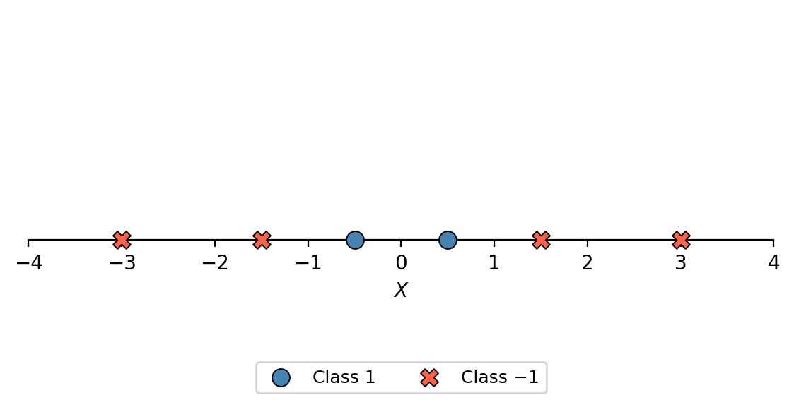
A single point in one dimension would be a linear boundary. We can see in the diagram there is no single cut point on \(X\) that can separate the two classes.
Now consider adding the feature \(X^2\) to each data point:
| Observation | \(X\) | \(X^2\) | Class |
|---|---|---|---|
| 1 | −3.0 | 9.00 | −1 |
| 2 | −1.5 | 2.25 | −1 |
| 3 | −0.5 | 0.25 | +1 |
| 4 | 0.5 | 0.25 | +1 |
| 5 | 1.5 | 2.25 | −1 |
| 6 | 3.0 | 9.00 | −1 |
This adds an extra dimension to our dataset and each observation now is a point \((X, X^2)\) in a two-dimensional space:
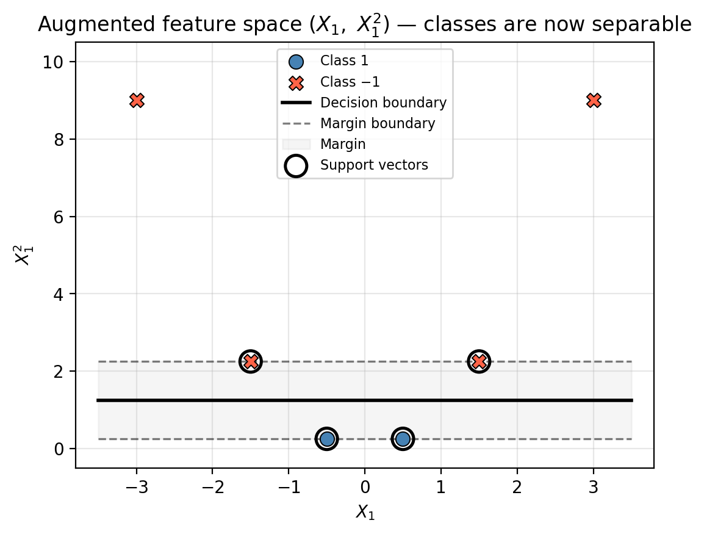
Once we have our data in two dimensions, we can see it is perfectly separable by a line. We can find this line by fitting a support vector classifer in 2D:
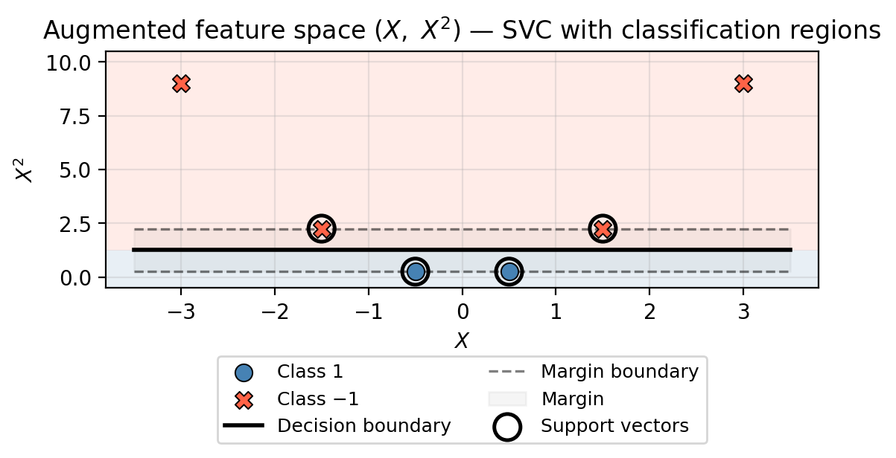
The support vector classifier found a horizontal linear boundary in the augmented space. What does this mean for classifying points in the original 1D space?
Since every value \(x_1\) on the number line maps to a unique point \((x_1,\, x_1^2)\) in the augmented space, we can evaluate the decision rule for every possible \(x_1\). A point is classified as Class 1 if its augmented image falls below the boundary line and as Class −1 if it is above the boundary line. This gives the following classification regions in the original space:
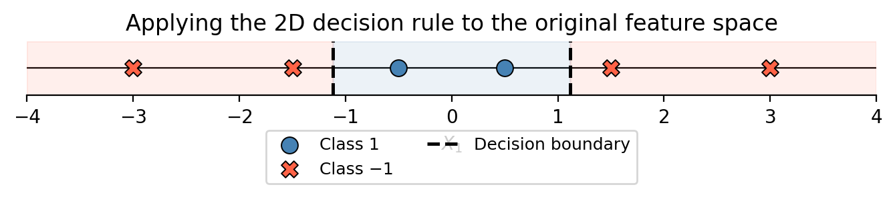
By augmenting the feature space we obtained a classifier that produces a non-linear boundary in the original space (two cut points instead of one) even though the classifier itself is entirely linear in the enlarged space.
Extending to two dimensions
The same idea applies when we have two or more predictors. Consider the circular dataset from above: in the original \((X_1, X_2)\) space the two classes are mixed, with no straight line able to separate them. But if we add a third feature \(X_3 = X_1^2 + X_2^2\) the inner cluster (small \(X_3\)) separates cleanly from the outer ring (large \(X_3\)) in the enlarged 3D space. A flat plane through that 3D space then produces a circular decision boundary when we evaluate the rule back in the original 2D space.
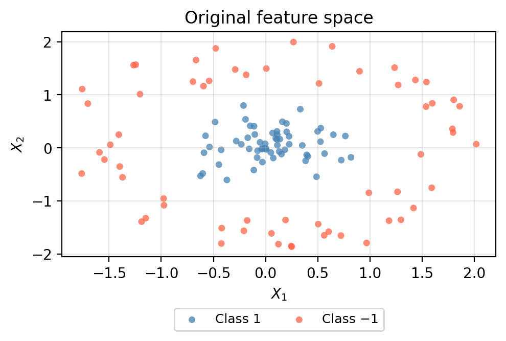
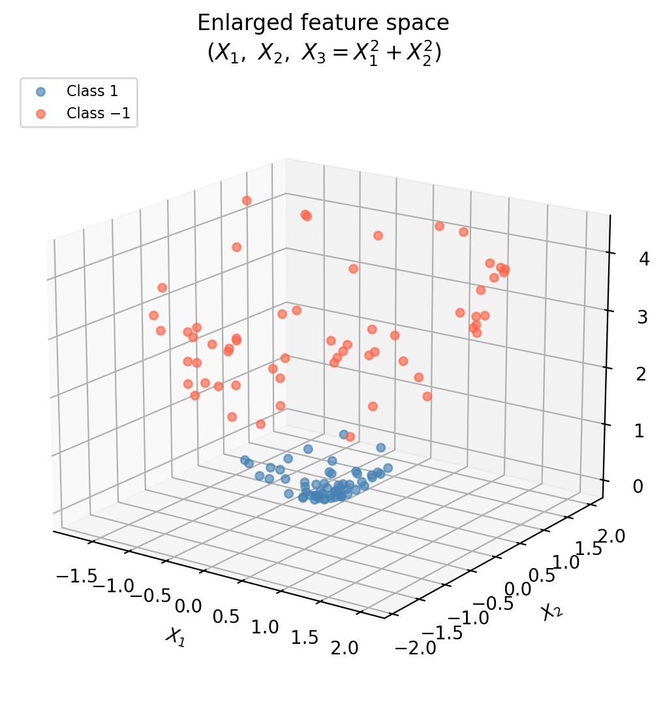
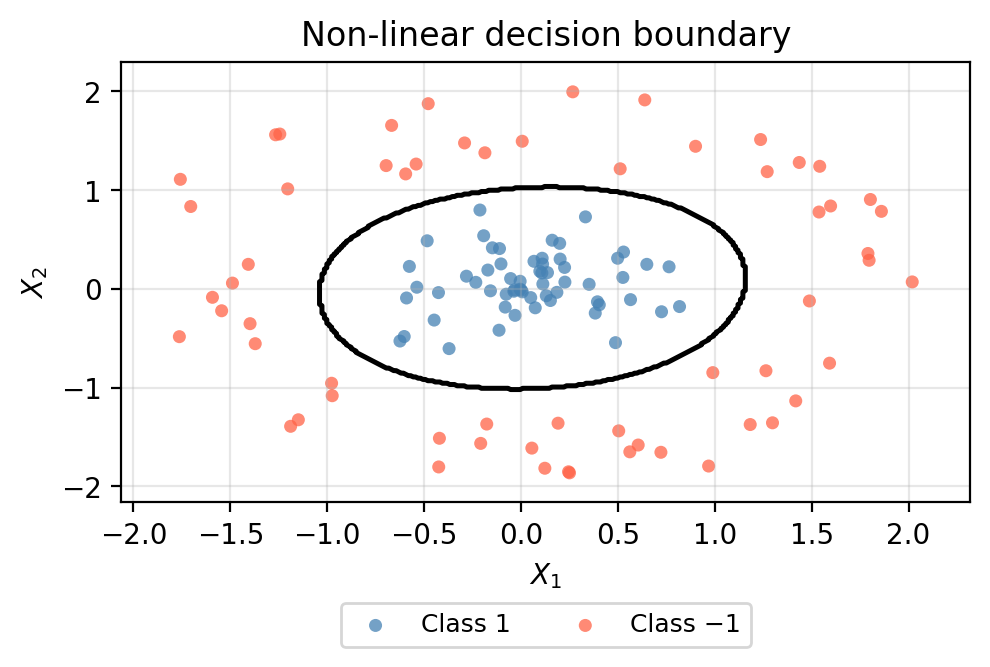
The core idea: we want to enlarge the feature space in a way that allows us to find non-linear boundaries in the original space. We can use not only polynomial terms but basicallly any other functions of the predictors! Anything that embeds the data into a space where the classes become (more) linearly separable.
The challenge: deciding which additional features to include quickly becomes intractable as the number of predictors \(p\) grows. Computing additional features for each observation also becomes computationally costly. The kernel approach below solves this efficiently.
The support vector machine
The support vector machine (SVM) is an extension of the support vector classifier that uses a kernel function \(K(x_i,x_j)\) to enlarges the feature space in a specific, computationally efficient way.
An SVM with a linear kernle is exactly the SVC and using a different kernel is equivalent to fitting a support vector classifier in an enlarged feature space, but without ever having to explicitly compute the new features. This lets us get the benefit of that enlargement without the computational cost of constructing it.
Kernels
We introduce three widely used kernels below. The mathematical definitions of the kernels use our usual notation, where we have a training set of \(n\) labeled observations \(x_1, \ldots, x_n\), where each \(x_i = (x_{i1}, x_{i2}, \ldots, x_{ip})\) is a \(p\)-dimensional vector and \(p\) is the number of features. All the hyperparemeters are based on the SVC implementation in sklearn.
Linear kernel
The linear kernel is given by
\[K(x_i, x_j) = \langle x_i, x_j \rangle,\]
where \(\langle x_i, x_j \rangle\) is the dot product between the observations \(x_i\) and \(x_j\).
Selecting the linear kernel for a support vector machine is equivalent to the support vector classifier with no feature augmentation: we are only fitting a linear boundary.
Hyperparameters:
| Parameter | What it controls |
|---|---|
C |
Penalty for margin violations; the only parameter to tune (see previous lesson) |
The linear kernel is the simplest choice and a good baseline. Use it when the decision boundary is expected to be approximately linear in the original feature space.
In our example data, though, the linear kernel cannot capture the circular structure of this data.
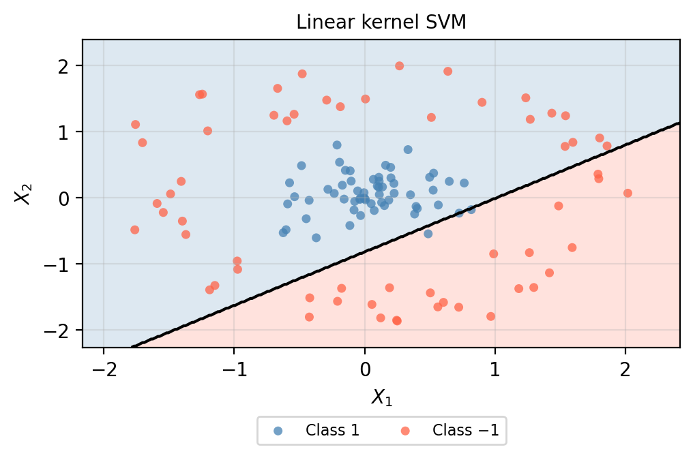
Polynomial kernel
The polynomial kernel is given by:
\[K(x_i, x_j) = (\gamma \langle x_i, x_j \rangle + r)^d,\]
where \(\gamma\), \(r\) (coef0) and \(d\) (degree) are hyperparameters.
The polynomial kernel captures interactions and powers of the original features in a similar way as our two previous examples. A higher degree \(d\) allows the boundary to bend and curve more.
Hyperparameters:
| Parameter | What it controls | Default |
|---|---|---|
C |
Penalty for margin violations | 1 |
degree |
Degree of the polynomial; higher values allow more curved boundaries and increase risk of overfitting | 3 |
gamma |
scales the inner product | scale |
coef0 |
controls influence of high vs low-degree polynomial | 1 |
The parameters degree and C are usually the main parameters to tune. However, the next example shows how a single parameter can greatly change the decision boundary:
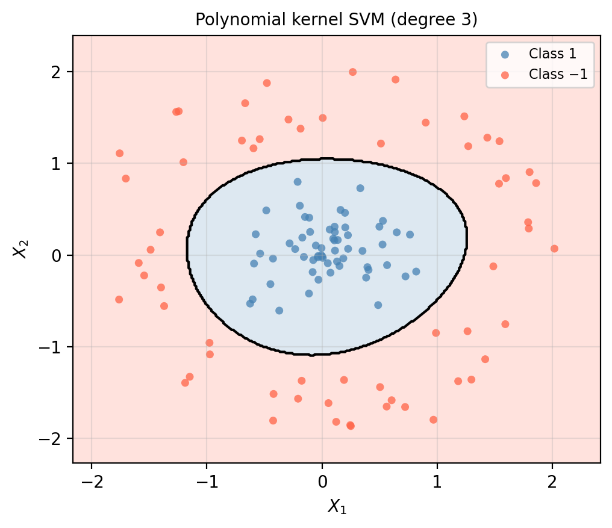
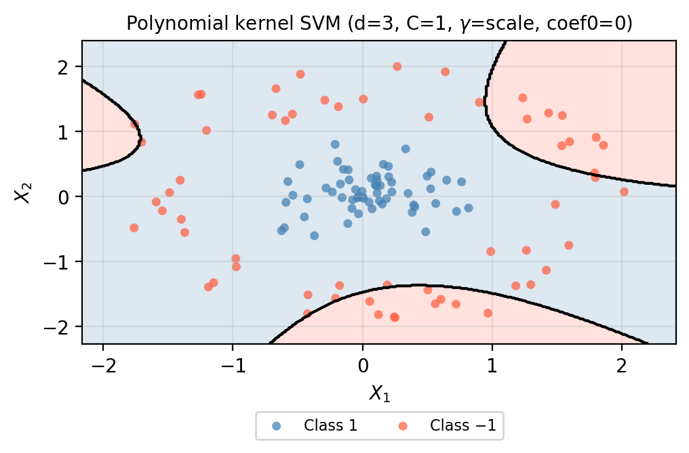
Radial (RBF) kernel
The radial basis function (RBF) kernel is given by:
\[K(x_i, x_j) = \exp\!\left(-\gamma \,\|x_i - x_j\|^2\right).\]
The RBF kernel measures proximity: nearby observations are considered similar and each training point’s influence drops off with distance, producing very local and flexible boundaries.
Hyperparameters:
| Parameter | What it controls | Default |
|---|---|---|
C |
Penalty for margin violations | 1.0 |
gamma |
How quickly influence decays with distance; larger values associated with more local fitting | 'scale' |
The RBF kernel is the most flexible of the three and is often the best default choice when the boundary shape is unknown. It also has less hyperparamters so it is easier to tune. Large gamma can lead to overfitting, and C and gamma should always be tuned together via cross-validation.
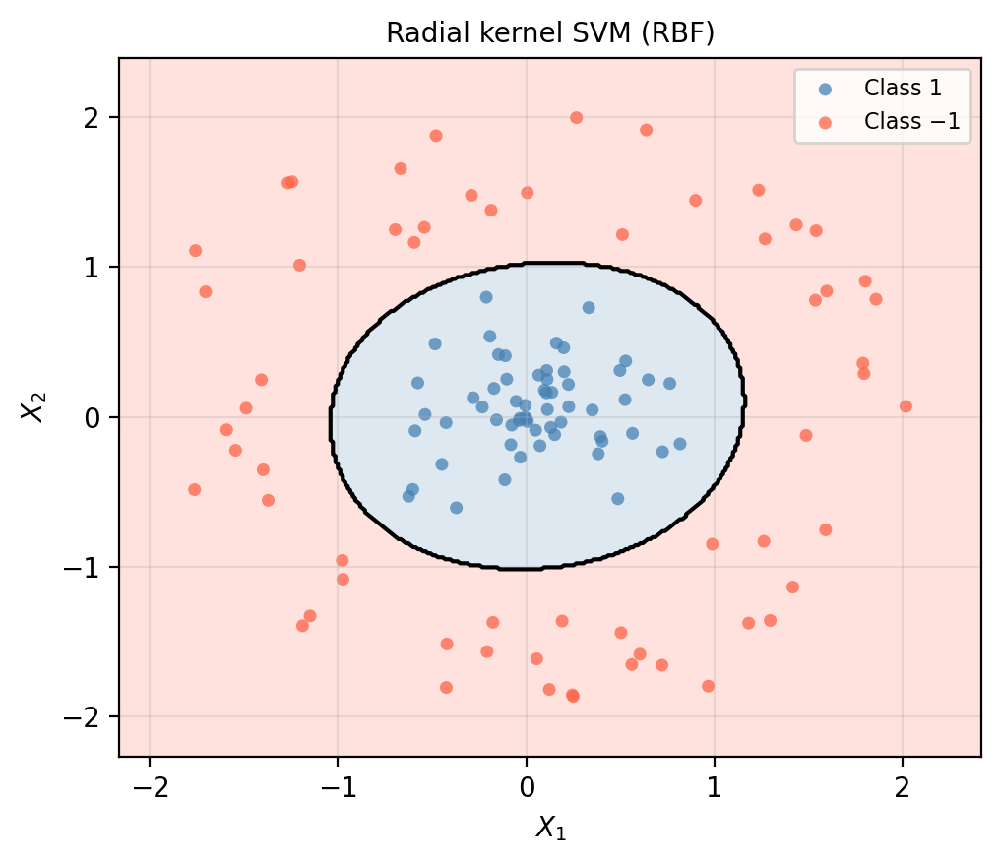
The RBF kernel adapts tightly to the circular structure of the data, producing a smooth, nearly circular decision boundary. It is the default SVM kernel unless we have some domain knowledge suggesting this is the right approach.
Exercise: Fire re-occurrence in Southern California chaparral
A research team monitored 200 chaparral shrubland sites in Southern California following a major wildfire event. At each site they recorded:
- Stand age (\(X_1\), standardized): years since the previous fire — a proxy for how much fuel has accumulated.
- Mean annual precipitation (\(X_2\), standardized): average annual rainfall — a proxy for moisture conditions.
The response variable is whether the site burned again within a 10-year observation window. The goal is to build a classifier that can predict re-burning risk at new, unmonitored sites so that managers can prioritize fuel treatments before the next fire season. The scatter plot below shows all 200 sites.
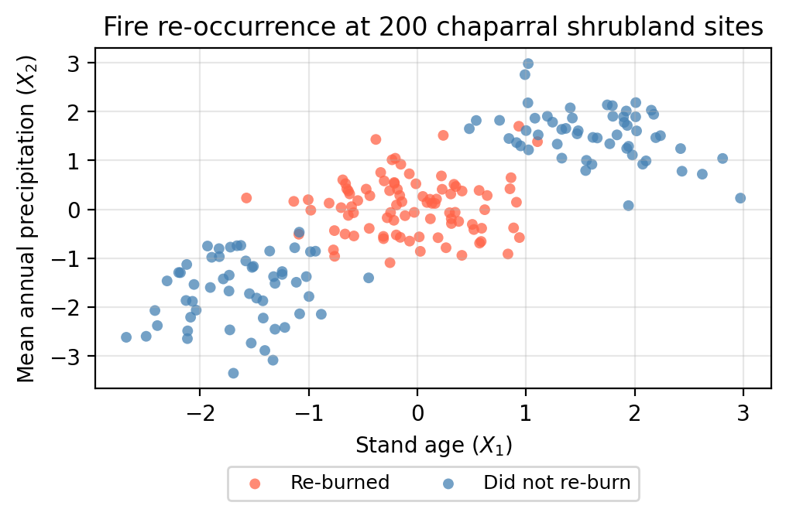
TipExercise 1
Look at the scatter plot above. Describe the pattern you see. Which combination of stand age and precipitation is most associated with re-burning? Which sites tend not to re-burn?
TipDiscussion
Re-burning occurs most frequently at sites with intermediate stand age and intermediate precipitation, the cluster in the middle of the plot. Sites at both extremes of the diagonal (young stands in dry, low-elevation sites AND old stands in wet, high-elevation sites) tend not to re-burn.
The 200 sites were split into a training set (140 sites) and a test set (60 sites). The table below shows the 5-fold cross-validated accuracy of four classifiers, estimated on the training set:
| Model | CV accuracy (5-fold) | |
|---|---|---|
| 0 | Logistic regression | 50% |
| 1 | KNN (k = 5) | 96% |
| 2 | Linear SVM | 53% |
| 3 | RBF SVM | 97% |
| 4 | Random forest | 95% |
TipExercise 2
The linear SVM achieves nearly the same accuracy as logistic regression. What do these two models have in common that prevents them from capturing the pattern in this data? Based on this, what kind of model would you turn to next?
TipDiscussion
Both logistic regression and the linear SVM can only produce a single straight-line (linear) decision boundary. Isolating the middle cluster requires two roughly parallel cuts along the diagonal. something no single line can achieve. Both models are fundamentally limited to linear boundaries and will fail on any data where the classes are arranged in a “sandwich” along a gradient. The natural next step is a model that can fit non-linear boundaries.
TipExercise 3
The random forest achieves similar accuracy to the RBF SVM on this dataset. What is one practical advantage of the random forest over the RBF SVM for this application?
TipDiscussion
The random forest provides feature importances: a straightforward measure of how much each variable contributed to the predictions. For this application, a manager can be told “stand age was the more important predictor,” which is actionable and easy to communicate. The random forest also usually perfomrs well “out of the box”, with not much hyperparameter tuning.
The plots below show RBF SVM decision boundaries fitted with three different values of gamma (C = 1 in all cases):
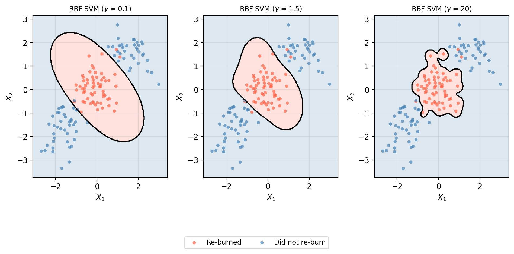
TipExercise 4
Looking at the three RBF SVM plots above. As \(\gamma\) increases, does variance increase or decrease? What about potential overfitting? What evidence do you see in the plot?
How would you select the best value of \(\gamma\) in practice taking into account the additional hyperparameter \(C\)?
TipAnswers
We can see that as \(\gamma\) increases, the variance of the model also does. This means that as \(\gamma\) increases potential overfitting increases. We can see this because the decision boundary for higher \(\gamma\) wraps tightly around individual training points rather than capturing the smooth band structure of the data. The model has essentially memorized the training set and might generalize poorly to new sites.
The best \(\gamma\) should be chosen using cross-validation on the training data (e.g.,
GridSearchCV) while simultaneously comparing with different values of \(C\).
References
James, Gareth, Daniela Witten, Trevor Hastie, Robert Tibshirani, and Jonathan E. Taylor. 2023. An Introduction to Statistical Learning: With Applications in Python. Springer Texts in Statistics. Cham: Springer.